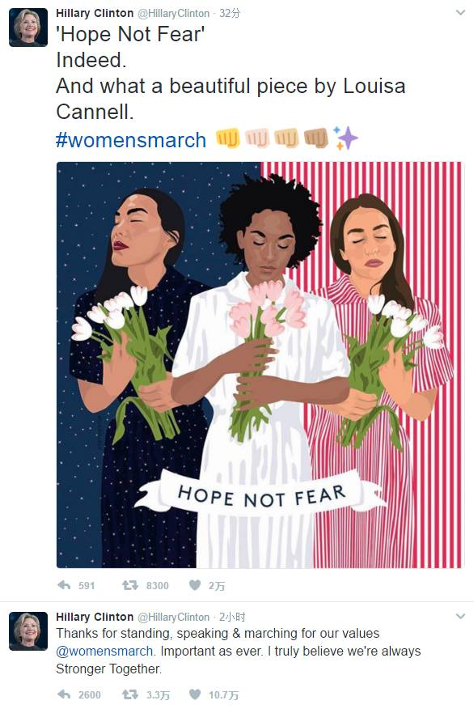
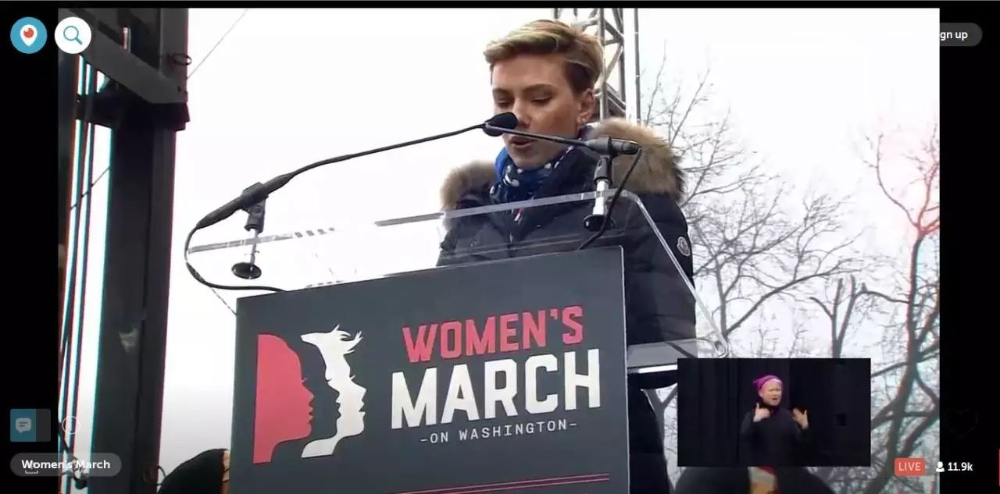

女人就是那堵“墙” | 华盛顿女人大游行全纪录
以下文章来源于女泉 ，作者雪涵灰燚琪慧
女性力量，奔流如斯。新媒体女性，妇女权利守望者。联络邮箱：gzxmtnx@163.com ｜ 微博：@新媒体女性 @我遭遇了性别歧视
本文授权转载自
新浪微博@新媒体女性
微信公众号：女泉（GZxmtnx）
新媒体女性网络，妇女权益守望者。
原文链接：http://mp.weixin.qq.com/s?__biz=MzIxNDE2MjM2Mw==&mid=2652149614&idx=1&sn=1062601f6a14b84ddea7cc33c4626bc1&chksm=8c4bf9babb3c70ace9d883bc28dcc577b0708d33d87155613fdf5739591f344e6d56971f8c0a&mpshare=1&scene=1&srcid=0124gX0y9WDlMlLwgneoVssy#rd
“这只猫会反击（This pussy grabs back）！”
美国时间21日上午，在川普宣誓就职总统的第二天，Huntington地铁站上，一张格外引人注目的粉红色华盛顿女人大游行宣传标语上这样写道。
粉红色是这次游行的主题色。为了契合游行主题“Pussy Grabs Back”，游行的标志性物件是一顶粉红色的猫耳毛线帽（Pussy Hat）。猫耳帽由全球数以千计的志愿者编织而成，在游行现场免费派发。

（现场随处可见戴着粉红猫耳帽的参与者。好想要这顶帽子啊~~~）
“Pussy Grabs Back”缘何成为游行主题？川普的“更衣室谈话”认为，位高权重和富有的男性对女性可以为所欲为，随便“抓她们下体”(grab them by the pussy)。于是，女人们在川普登基之初的华盛顿，号召了一场声势浩大的游行：pussy grabs back！
据CNN，截止至美国时间21日下午1点半，地铁方面根据乘客数量估计已有27万5千人参与游行。据游行组织者，全球一共有超过300万人在举行“姐妹游行”声援。据去了现场的中国女权者描述，去得稍微晚一点的人，需要排很久的队，才能搭上开往游行现场的地铁。

（粉红色的人海。）
那些有趣的标语：愤怒的奶奶
在游行官网发布的《2017年华盛顿女权游行宣言》中，组织者们这样阐释她们游行的目的：
“这是一个由女性领导的、旨在团结所有性别、年龄、种族、文化、政治立场和背景的运动。此运动意在证实我们共有的人道与博爱，并使我们无畏的抵抗和决心能够广而告之。
我们意识到，我们共同拥有的女性身份导致我们遭受很多社会不公以及人权问题，所以我们列出了一个有代表性的、基于普世自由与正义价值的、对政府的规划与展望。
我们的自由是紧密相关的。我们欢迎积极的合作，并对过往运动——选举权运动、废奴运动、民权运动、女权运动、美国印第安人运动、占领华尔街、婚姻平等运动、黑人生命平权运动——留下的遗产表示尊重。”
在twitter的#WhyImarch 标签下，许许多多参与游行的人写下了自己参加这次游行的原因：
Angela：我美丽的儿子有残疾。我是个女人，一个移民的女儿，乳腺癌的幸存者。我今天来游行是因为偏见是川普竞选活动的中流砥柱，并且他的政策废除了保护我儿子和我免于因为先前疾病而被拒绝医保的法律。我们去华盛顿游行，是因为我们付不起沉默的代价。
Malcolm Torrejón Chu: 我是一名草根女权主义者。我在前线与有色女性并肩共行，因为在所有女性和任何不具有主流性别特质的人都自由之前，我们不可能会自由。
Ashley Cangiamilla：我可能没有为川普投票，但他【是】我的总统，就像是你的一样。
但我今天来游行是为了让他知道，就算他是总统，我们也不会因此而妥协于他的所有作为。我们会让他负责。这个国家是建立于多元性之上的，而【那】正是让这个国家变得【厉害】而美丽的原因。
我国的流产率一直很低，而我认为这是因为人们一直能接触到廉价高质的避孕措施的原因。这个国家的每个人都是人，并且应该发声。如果他们没有声音，我会成为ta们的声音。因为我希望我所有不同肤色的、不同社会阶层的、不同性取向的、不同性别的、不同宗教的美国伙伴们都知道，我爱ta们并且会支持ta们。我希望世界的其他伙伴也知道我关心ta们。
女权即人权。我爱这个国家至死方休，我不愿看见它倒退。
这些去参与游行的人，有着不同的性别、性向、年龄、种族、信仰、阶层……
Women are the wall and Trump will pay-女性就是那堵“墙”，川普会付出代价的！（川普承诺将会建起那道墙，把移民和难民挡在墙外。标语暗示女性才是那堵川普亲手建起来阻止他自己的“墙”，女性不会任由自己的权益被川普践踏。）

“高质量的男人才不怕男女平等。”——本标语来自伦敦姐妹游行。

“男孩不会总一个样，他也可以变成好人。”——本标语来自伦敦姐妹游行
格莱格 A.肯达纳是个可爱的小伙子，他在twitter上写：#我为何游行#为了我妈妈（露丝·达图·肯达纳）为了我的姐妹（杰希卡·肯达纳）以及所有让这个国家伟大的女性。#女性游行
格莱格在游行现场穿着的T恤上写着：“如果你在不公正的环境中保持中立，那么你就和压迫者站在了一边。”

如果你建造一座墙，我们这一代会打破它。

我为未来的女儿游行。（图片来源：@女权之声）
奶奶们也愤怒了：历史真特么容易倒退！

真不敢相信我特么一把年纪了还得为这破事站出来。（图片来源：@女权之声）

要是堕胎权在1946年就通过了，这整件事（川普上台）都不会发生了！（图片来源：@女权之声）
中国女权者的身影也出现在了现场。她们带着“我们要女权的世界首脑！”“总统，直男癌是病，得治！”“全宇宙的女权主义者都在看着你！”等标语，积极表达来自中国的声音。
（图片来源：@女权之声）
还有很多名人，或者去了现场，或者发推支持。希拉里发了两条推特支持本次游行：Stronger Together.Hope Not Fear.

桑德斯：祝贺女性大游行的大家！我们一定要捍卫所有女性的生育正义。
现场捕捉到了凯特大魔王！
（图片来源：@女权之声）
斯嘉丽.约翰逊在聚会现场发表演讲，呼吁争取女性身体自主权，尤其是自主生育权和堕胎权，以及为女性健康提供更多服务。“大表姐”詹妮弗·劳伦斯、“水果姐”凯蒂·佩里发推支持游行。水果姐也在游行现场。



斯嘉丽.约翰逊：“川普，我没投票给你。我很想支持你，但是我首先需要你支持我，支持我的姐妹，我的母亲，支持所有的女性。”
麦当娜也来了。她说，“D.T in the house. 黑暗将我们从沉睡中粗暴唤醒，看起来我们在正义必胜的温床里呆得太久了。那些好的东西没能赢得这场大选，但它终究会的。我们不会退缩，我们的团结将产生力量。对于那些说我们这场游行不会有任何作用的人，我只想说，F**K YOU！”
歌手加奈儿.梦奈Janelle Monae、歌手艾丽西亚.吉斯Alicia Keys也分别上台发表演讲或表演。


纵览聚会现场的演讲，本次游行的呼吁重点聚焦在：我们是人民，我们的声音需要被听见；团结一致，不要分裂，主动对话；堕胎权；同工同酬；移民；有色人种；妇女参政；宗教信仰；多元性别等几大主题上。
“推特治国的手指不能变成引发混乱的手指（讽刺川普爱发推特）。波兰之前打算通过一项反堕胎法案，6000人上街抗议，它就改变了。我们是人民，我们有人民的力量，我们能改变。
我在柏林的一个朋友托我给大家捎一句话，ta说，ta们在柏林，最知道墙是没用的。
别想着分裂我们。如果你要穆斯林登记，那我们所有人都回去登记为穆斯林。
“兄弟姐妹们，你们是什么样，民主就是什么样。
“我们今天在这里，是因为有些人有些事不是我们选的，但是我们今天选择了站出来发声，选择了联合起来游行。
在未来的四年里，我们的价值观将受到挑战，在未来四年的每一天，我们都将作出选择。
姐妹游行：全球各地发来贺电
旧金山、伦敦、柏林、悉尼、巴黎、波士顿、甚至南极……华盛顿女人大游行的组织者表示有超过200个组织报名参加此次游行，预计全球有超过300万人在同时举行抗议游行活动声援此次女人大游行。
全美各地游行分布图。柏林。（图片来源：@女权之声）

南极。
利物浦。

旧金山。甘地也戴上了粉红猫耳帽。（图片来源：@WOMEN我们2012）

多伦多。（图片来源：@女权之声）

华盛顿、波士顿、巴黎、伦敦。
北京时间1月22日凌晨4点29分，游行正式开始，数十万计的抗议者沿着计划路线走向白宫。
作者 | 瑞雪 奕涵 小灰 明燚 艾琪 心慧
特别感谢@女权之声和@WOMEN我们2012 提供部分现场图片。
欢迎继续关注“女泉”（GZxmtnx），我们将以最快速度奉上本次游行的后续深度报道和分析文章。